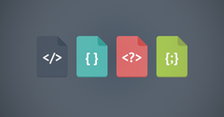

吴喆枭
的个人博客
前端基础
总结
js的一些动画
静态网页
关于我
分享按钮
前端基础

HTML/CSS基础
JavaScript基础
网页编码规范
Web前端切图
总结
个 人 总 结
3月13日总结:
控制程序的流程
3月15日总结:
面向对象编程
3月16日总结:
变量的概念
3月17日总结:
表达式和运算符
3月18日总结:
语句
3月19日总结:
对象的概念
3月20日总结:
数组的概念
3月21日总结:
函数的概念
3月22日总结:
作用域
3月30日总结:
git的使用
3月31日总结:
对象的概念
4月1日总结:
文档对象模型Dom
4月2日总结:
Window 对象
4月3日总结:
js事件详解
4月18日总结:
ajax 表单
4月20日总结:
Http状态码
4月24日总结:
canvas画布
js常用动态效果
小试牛刀
伸缩菜单
放大镜
轮播文字
关于弹性的动态
鼠标移入颜色渐变
表格的增删改查
上下页面对对象的方法
静态网页
小试牛刀
静态网页NO.1
静态网页NO.2
静态网页NO.3
静态网页NO.4